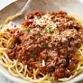

Let's Cook Spaghetti Bolognaise

Description:
Our best ever spaghetti bolognese is super easy and a true Italian classic with a meaty, chilli sauce. This pasta bolognese recipe is sure to become a family favourite.
Ingredients:
- 1 medium onion, chopped
- 1 pound ground beef
- 1 teaspoon salt
- 2 teaspoons dried basil
- 1 small green bell pepper, diced
Steps:
- Gather all ingredients.
- Combine ground beef, onion, garlic, and green pepper in a large saucepan over medium-high heat. Cook and stir until meat is browned and crumbly and vegetables are tender, 5 to 7 minutes. Drain grease.
- Stir diced tomatoes, tomato sauce, and tomato paste into the pan. Season with oregano, basil, salt, and pepper. Simmer spaghetti sauce for 1 hour, stirring occasionally.
- Serve hot and enjoy!